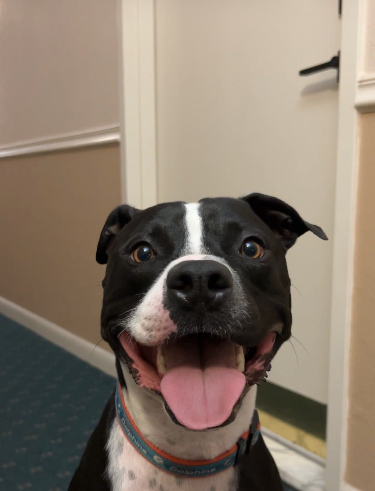

When Tyson came home, he didn't need a perfect system. He needed to feel safe. What finally worked wasn't a trick — it was a rhythm: same walk, same words, same calm, every single day. This kit is that rhythm, organized so you can use it from day one.
What this is: a practical organization and adjustment resource — routines, checklists, and trackers for your dog's first month home.
What this is not: veterinary care, medical advice, or professional behavior treatment. For health concerns or concerning behavior, bring in your veterinarian or a qualified trainer — page 11 helps you prepare for exactly those conversations.
Focus: safety and predictability. Small world: one calm room, short leashed potty trips, no visitors, no big outings.
A win looks like: eating, drinking, sleeping, and one relaxed moment near you.
Focus: the daily routine becomes boringly consistent — same wake time, same meal spots, same walk route, same words.
A win looks like: your dog starting to anticipate the routine (waiting at the door, settling at quiet time).
Focus: low-pressure connection — the activities on page 9. Let your dog choose to approach. Keep the routine steady.
A win looks like: softer body language: loose tail, resting near you, taking treats gently from your hand.
Focus: gently widen the world — a new walk street, a calm visitor, short alone-time practice — one new thing at a time, never stacked.
A win looks like: recovering quickly after something new, and returning to calm.
Many adopters find the "3 days / 3 weeks / 3 months" idea a helpful frame: roughly three days to stop feeling overwhelmed, three weeks to learn the routine, three months to feel at home. Treat it as a rough guide, not a schedule your dog must meet.
| Days | Environment | Handling & contact | Outings |
|---|---|---|---|
| 1–3 | One quiet room + a safe spot (crate or bed) your dog is never bothered in. Low noise, dim evenings. | Let the dog approach you. Sit nearby, read, exist calmly. No baths, no grooming, no guests. | Leashed potty breaks only, same door, same patch of yard or sidewalk. |
| 4–7 | Gradual access to more of the home, one room at a time, supervised. | Hand-feed part of meals if the dog is comfortable. Start pairing your voice with good things. | Short, quiet walks at low-traffic times. Same short route every day. |
| 8–14 | Normal household sounds return gradually (TV, laundry, deliveries). | Begin gentle touch where your dog enjoys it (often chest or shoulder — watch their response). | Slightly longer walks, still the familiar route. Practice calm door manners. |
| 15–21 | Dog moves comfortably through the home. Keep the safe spot sacred. | Trust activities (page 9), short grooming introductions, collar and harness handling practice. | Add one new quiet street or park edge. Observe from a distance your dog can relax at. |
| 22–30 | Practice short alone-time sessions; leave calmly, return calmly. | Invite one calm visitor who ignores the dog and lets the dog decide. | One gentle new experience at a time — never stack new place + new people + new dogs. |
Rule of thumb: if your dog stops eating, sleeping, or settling after a change — make the world smaller again for a few days. That's progress, not failure.
| Time | Anchor | What it looks like |
|---|---|---|
| ______ | Wake & potty | Same door, same words ("let's go out"), calm greeting — no big energy. |
| ______ | Breakfast | Same spot, same bowl. Quiet while eating; nobody touches the bowl. |
| ______ | Morning walk | Same route at the same time. Let sniffing happen — it's how dogs decompress. |
| ______ | Quiet block | Safe-spot rest while you work or do the house. Practice being boring. |
| ______ | Midday check-in | Potty break + two minutes of an easy trust activity (page 9). |
| ______ | Afternoon rest | Newly adopted dogs sleep a lot while they adjust. Let it happen. |
| ______ | Dinner | Same spot, same routine as breakfast. |
| ______ | Evening walk | Shorter and calmer than the morning walk. Wind the day down. |
| ______ | Wind-down | Dim the lights, lower the noise, same phrase ("bedtime"), safe spot. |
| For | We say | For | We say |
|---|---|---|---|
| Going out | Safe spot | ||
| Mealtime | All done / settle |
| Day | AM meal | PM meal | Walk 1 | Walk 2 | Quiet time | One-line note |
|---|---|---|---|---|---|---|
| 1 | ||||||
| 2 | ||||||
| 3 | ||||||
| 4 | ||||||
| 5 | ||||||
| 6 | ||||||
| 7 | ||||||
| 8 | ||||||
| 9 | ||||||
| 10 | ||||||
| 11 | ||||||
| 12 | ||||||
| 13 | ||||||
| 14 | ||||||
| 15 | ||||||
| 16 | ||||||
| 17 | ||||||
| 18 | ||||||
| 19 | ||||||
| 20 | ||||||
| 21 | ||||||
| 22 | ||||||
| 23 | ||||||
| 24 | ||||||
| 25 | ||||||
| 26 | ||||||
| 27 | ||||||
| 28 | ||||||
| 29 | ||||||
| 30 |
If there are kids at home: the first-week rule that works is simple — we let the dog come to us. Sitting on the floor nearby beats reaching, chasing, or hugging.
Normal in week one: not eating much, sleeping a lot, hiding, following you everywhere, or ignoring you entirely. Call your veterinarian about refusing all food and water beyond a day, vomiting or diarrhea that persists, or anything that worries you — that's what they're for, even in week one.
| Activity | How |
|---|---|
| 1 · The name game | Say the name once, cheerful and soft. Any glance your way earns a treat. Name = good things. |
| 2 · Treat scatter | Scatter a small handful in the grass or on a snuffle mat. Sniffing and foraging is naturally calming. |
| 3 · Sit-with-me time | Sit on the floor with a book. No talking, no reaching. Let the dog choose the distance. |
| 4 · Hand target | Offer a flat palm at nose height. A sniff or touch earns a treat. Builds an easy, consensual hello. |
| 5 · The slow walk | One walk this week has no destination. The dog picks the sniffing spots; you just follow the leash. |
| 6 · Find it | Toss one treat where the dog can see it land and say "find it." Confidence, one treat at a time. |
| 7 · Grooming hello | One slow brush stroke where they like touch, then stop. Ending early is the point. |
| 8 · Dinner puzzle | Feed part of a meal from a food puzzle, snuffle mat, or rolled towel. Working for food is satisfying. |
| 9 · Watch the world | Sit together somewhere quiet and just watch — a porch, a window, a parked car. Calm company, zero demands. |
| 10 · The choice test | Pause petting after a few seconds. If the dog leans in, continue. If they move away, respect it. This one teaches you. |
| Date | Situation (what was happening) | What I noticed | What helped |
|---|---|---|---|
Bring this page with you: "he startles at X and settles with Y" is exactly the kind of note veterinarians and trainers can work with — far better than trying to remember three weeks at once.
| Allowed on the couch? | YES / NO | Allowed in bedrooms? | YES / NO |
| Fed from the table? | YES / NO | Allowed to greet at the door? | YES / NO |
| Job | Name | Backup |
|---|---|---|
| Morning feed + walk | ||
| Evening feed + walk | ||
| Midday check-in / potty | ||
| Training minutes + trust activities | ||
| Vet visits + records | ||
| Weekly tracker review (page 13) |
The one rule that isn't optional: the safe spot is sacred. When the dog is on their bed or in their crate, they're off duty — no petting, no calling, no kids. That single rule builds more trust than any trick.
| This week's win (however small) | Hardest moment | One small thing to try next week | |
|---|---|---|---|
| Week 1 | |||
| Week 2 | |||
| Week 3 | |||
| Week 4 |
Look back at day one. Write down three things your dog does now that they couldn't — or wouldn't — do then.
What does your dog love that you didn't know a month ago?
The rhythm continues past day 30 — keep the anchors, keep the safe spot sacred, and keep letting your dog choose. You've built the foundation.
| Contact | Name / clinic | Phone |
|---|---|---|
| Primary veterinarian | ||
| 24-hour emergency vet | ||
| Rescue / adoption organization | ||
| Trainer / behavior professional | ||
| Pet sitter / backup person | ||
| Microchip company + chip number |
ASPCA Animal Poison Control (US): (888) 426-4435 — 24/7 (a consultation fee may apply).
| Item | Details |
|---|---|
| Food brand + daily amount | |
| Medications + schedule | |
| Known sensitivities / allergies | |
| Words this dog knows |
Please read: The First 30 Days Kit is an educational and organizational resource for new rescue-dog adopters. It is not veterinary care, medical advice, or professional behavior treatment, and it does not guarantee any specific behavioral outcome — every dog's history and pace are different. Always consult a licensed veterinarian for health concerns and a qualified trainer or veterinary behavior professional for concerning behavior, especially anything involving fear, aggression, or safety. If a dog ever makes you feel unsafe, contact a professional before continuing any plan — including this one.
Tyson is a real rescue. His first month home wasn't about training — it was about safety, patience, and a rhythm repeated every single day. This kit is the plan his family wishes they'd had on day one, organized so yours starts calmer than theirs did.
Questions about your order or the kit? Message Tyson's Time on Instagram or TikTok — replies come from the humans behind the account.
© 2026 Tyson's Time. For personal household use — please don't redistribute or resell. Thank you for adopting.